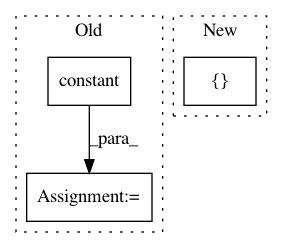

51940831ed707cec2427bcad984b192c839bb66a,niftynet/contrib/sampler_pairwise/sampler_pairwise_uniform.py,PairwiseUniformSampler,layer_op,#PairwiseUniformSampler#,107
Before Change
image_id = tf.reshape(image_id, (1,1))
start_location = tf.zeros((1, self.spatial_rank))
end_location = tf.constant(self.window_size[:self.spatial_rank])
end_location = tf.reshape(end_location, (1, self.spatial_rank))
end_location = tf.to_float(end_location)
locations = tf.concat([image_id, start_location, end_location], axis=1)
return windows, locations
After Change
resampler = ResamplerLayer(
interpolation="linear", boundary="replicate")
windows = resampler(combined_volume, computed_grid)
out_shape = [self.batch_size] + \
list(self.window_size[:self.spatial_rank]) + \
[window_channels]
windows.set_shape(out_shape)
In pattern: SUPERPATTERN
Frequency: 3
Non-data size: 3
Instances
Project Name: NifTK/NiftyNet
Commit Name: 51940831ed707cec2427bcad984b192c839bb66a
Time: 2018-01-29
Author: wenqi.li@ucl.ac.uk
File Name: niftynet/contrib/sampler_pairwise/sampler_pairwise_uniform.py
Class Name: PairwiseUniformSampler
Method Name: layer_op
Project Name: NifTK/NiftyNet
Commit Name: 984d17836d7a6240942cd44f2f61c92a427bb9bb
Time: 2018-04-24
Author: z.eaton-rosen@ucl.ac.uk
File Name: niftynet/layer/crop.py
Class Name: CropLayer
Method Name: layer_op
Project Name: microsoft/nni
Commit Name: 55b557f17385ca10b8a3e8fb8bbb0d3799906db5
Time: 2019-11-20
Author: 38930155+chicm-ms@users.noreply.github.com
File Name: src/sdk/pynni/nni/compression/tensorflow/builtin_pruners.py
Class Name: FPGMPruner
Method Name: _get_min_gm_kernel_idx